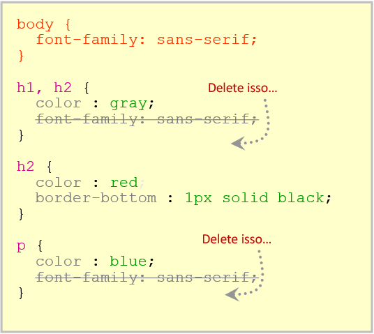

a) É possível sobrepor à aparência(estilo) definida em regras CSS anteriores, mais genéricas, por regras mais específicas? Se possível, essa técnica tem nome? Exemplifique
Sim, seu nome é override.
h1, h2, h3{
color: black;
}
h1{
color: red;
}
As características definidas para h1 primeiramente viraram mais específicas, portanto o seletor mais específico que vai definir sua aparência.
b) Caso definíssemos uma regra CSS mais geral para cabeçalhos de nível 1, 2 e 3, seguida de outra somente para o nível 1, como seria o comportamento do navegador? Descreva os vários cenários possíveis e o comportamento do navegador em cada uma delas.
Se usássemos uma regra geral para o cabeçalho do tipo 1, 2 e 3 como por exemplo padronizar a cor fonte como preto e depois criássemos uma regra específica para o cabeçalho de tipo 1, definindo a cor como vermelho, o navegador reagiria exibindo o cabeçalho de tipo 1 na cor vermelha e os do tipo 2 e 3 na cor preta.
c) É sempre interessante otimizar o código CSS? Cite algumas vantagens.
economia no tráfego do servidor, reutilização de codigo, flexibilidade para a utização de outras mídias.
d) Defina herança em CSS. Utilize, também, imagens para ilustrar tais definições.
O que for definido como propriedade no pai será repassado para todos os seus filhos e até seus netos, sendo isso uma regra explícita para todos.
e) Podemos sobrescrever características herdadas todas as vezes que desejarmos deixá-la mais específica?
Sim, todos os elementos que herdarem características definidas anteriormente são sobescritos com uma regra CSS mais específica.